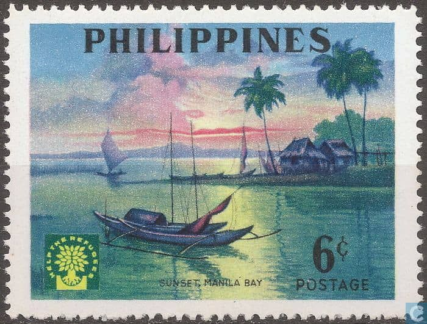
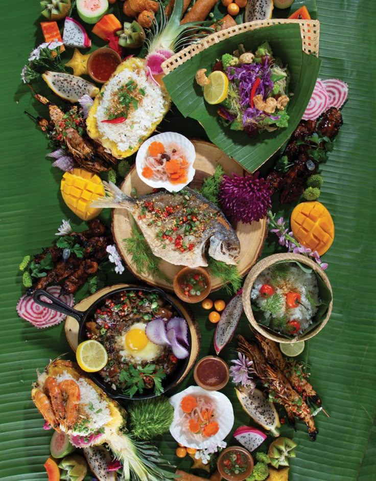
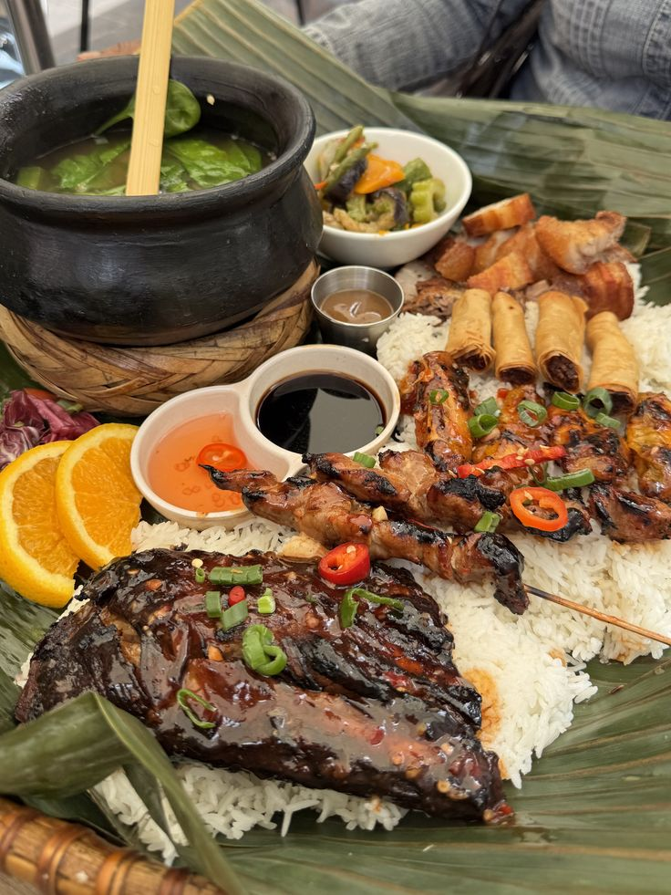
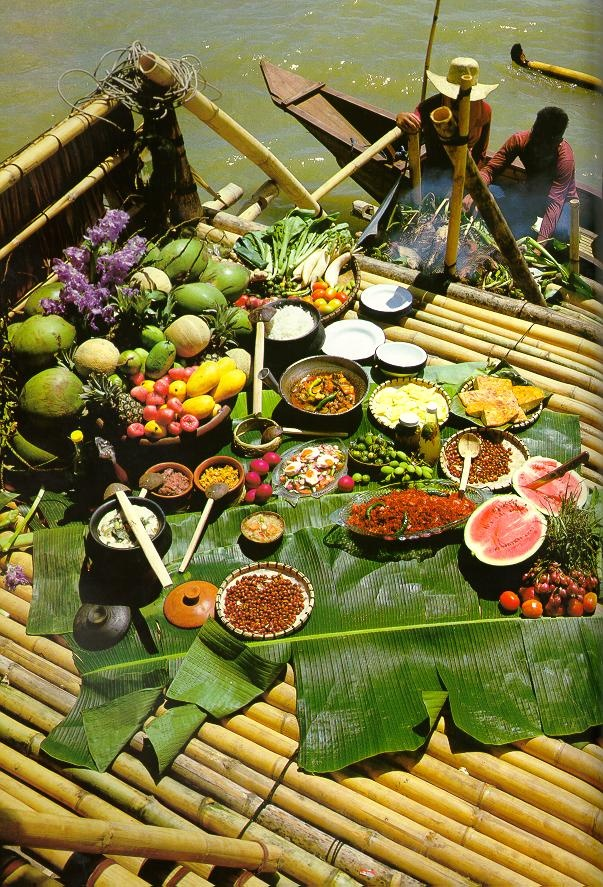

Every Filipino dish has a story. Recipes are often passed down through generations, connecting families through shared traditions, memories, and cultural identity. Food plays a central role in Filipino life, bringing people together during celebrations, family gatherings, and everyday moments. From vibrant flavors to communal dining experiences, Filipino cuisine reflects heritage, hospitality, and the importance of community.



